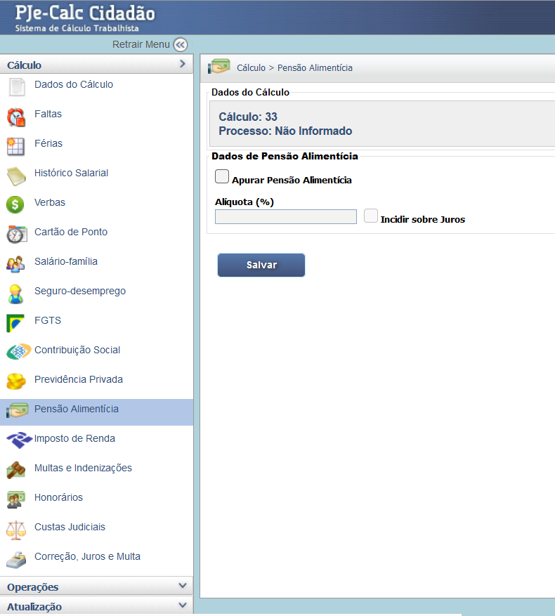

Manual Interativo de Cálculos Trabalhistas
Um guia completo e interativo para entender os cálculos na esfera judicial trabalhista.
8.1. Liquidação das Verbas Trabalhistas
A pensão alimentícia é uma dedução legalmente prevista, lançada no PJe-Calc quando há determinação judicial para desconto sobre os créditos trabalhistas do empregado.
- Na tela Pensão Alimentícia, marque o checkbox "Apurar Pensão Alimentícia".
- Informe a alíquota (%) determinada judicialmente.
- O checkbox "Incidir sobre Juros" deve ser marcado se houver previsão expressa na decisão judicial.
Tela de Configuração da Pensão Alimentícia
Para que a pensão seja descontada, é necessário acessar o Parâmetros da Verba de cada verba deferida (ex: Saldo de Salário, 13º Salário) e marcar a incidência de Pensão Alimentícia.
Atenção: A base de cálculo da pensão (quais verbas incidem e se inclui juros) deve ser estritamente observada conforme a sentença ou acordo judicial.